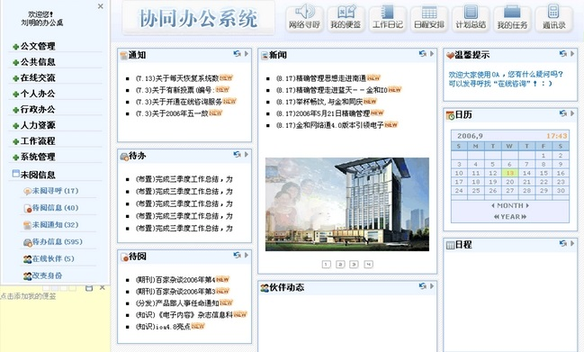

电信行业oa系统解决方案
编辑：千正软件 2016年10月24日
随着电信企业近年来的快速发展，业务规模急速膨胀，但是伴随发展而来的是企业内部系统设备结构日益复杂，每个业务都配置独立的软件、硬件以及运营维护团队，系统缺乏活力，管理复杂，企业资源无法共享，系统性能受到严重阻碍，电信企业办公信息化水平出现瓶颈。如何建立一套安全、简便的电信行业oa办公自动化系统解决方案成为电信企业不得不考虑的事情。
电信行业oa系统特点
千正电信行业oa办公平台主要由各种机器组成的数据中心、一组部署管理的软件以及由此通过自动部署生成的虚拟机组成。与现有的企业数据中心相比，千正电信行业oa办公自动化平台具有很多优势：
1.灵活的 IT 基础架构，可以要做到资源的随时随地按需分配。
2.自动化资源部署。用户、管理员和其他人员能通过界面对oa办公系统进行管理和监控。完全自动化的部署流程不仅符合安全要求，而且能自动适应用户的需求。
3.端到端服务请求管理。 电信行业云计算管理平台不仅提供了对数据中心进行运维管理的能力，还提供了针对业务的端到端流程管理。
4.友好的用户界面，简单易用，基本不需要专门培训。
5.千正电信oa办公系统高度严格的数据隔离措施，确保用户数据的私密性。

电信行业oa系统功能
1.信息显示区。
展示新闻、通知、待办事项、日常工作的各项模块。用户能够快速查看需要处理的工作信息，以达到提高工作效率的目的。
2.文件管理。包括文件发送、文件接收、文件分享、文件管理、档案管理等多项功能。实现跨机构、部门的电子公文交换，提升公文处理速度，提高工作效率。
3.公共信息管理。包括新闻、通知、电子期刊、规章制度、知识共享等板块。
4.在线交流功能。包括网上寻呼、网上调查、个人建议、内部论坛、网络会议等功能
5.个人办公管理。包括便签管理、工作日记管理、日常安排、计划总结、任务管理、工作委托、网络文件、个人信息、通讯录等模块
6.行政办公模块。包括车辆管理、用品管理、会议管理、资产管理等模块
7.人力资源管理。包括人事管理、考勤管理等。
8.工作流程管理。
9.未读信息管理。
10.系统管理。